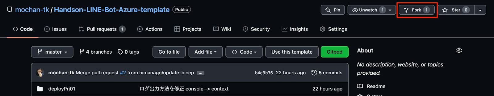
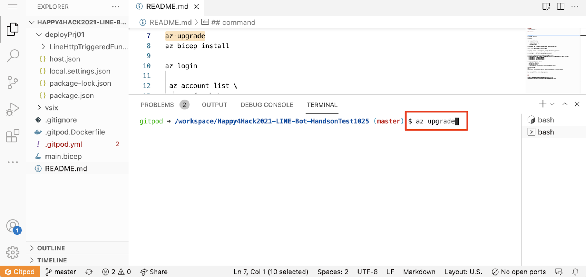
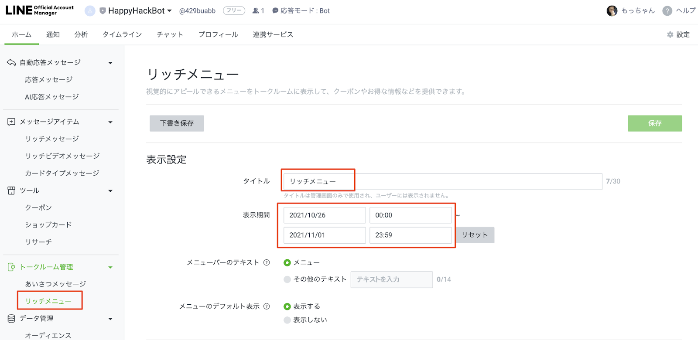
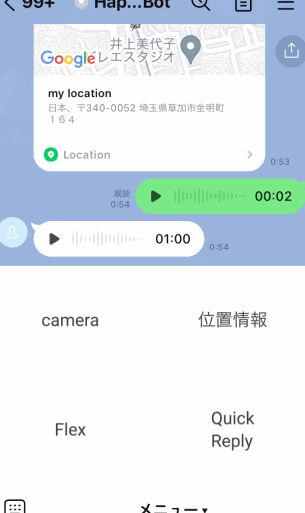

概要
LINE Botを作りつつ、Messaging API(および周辺の技術)の基本的な使い方を学んでいただければと思います！
当日の持ち物
- LINEがインストール済みのスマホ
- ChromeがインストールされたPC（Chromeのバージョンは最新のものを使っていただければと！）
事前準備
- GitHubアカウント作成
- Azureアカウント作成
- LINEアカウント作成(こちらのサイトでログインできるかどうかを確認ください)
使用するサービス・ツール
- Microsoft Azure Functions, Storage, Cosmos DB, Bicep
- Node.js
- Gitpod(月50時間無料)
- GitHub
構成図
注意事項
若干、Microsoft Azureの課金が発生する可能性があります。それ以外は課金など発生しません。
チャネルの作成スタート
https://developers.line.me/ja/services/messaging-api/ にアクセス。
「今すぐはじめよう」のボタンを押して進めていきましょう。

「LINEアカウントでログイン」を押してください。

LINEのログインを求められるのでログインしてください。

チャネルの種類
Messaging APIになっているか確認します。

プロバイダ
既にプロバイダーを作っている場合 → 利用するプロバイダーを選択しましょう。

初めて → 新規プロバイダー作成を選択しプロバイダー名を入力しましょう。
（LINEという文字は含められません。）

会社・事業者の所在国・地域

チャネルアイコン
チャネルアイコンを登録しましょう。（今回は必須ではありません）

チャネル名、チャネル説明
下記を入力しましょう。
チャネル名：「HandsonBot」
チャネル説明：「HandsonBotです。」

大業種、小業種

メールアドレス、プライバシーポリシーURL、サービス利用規約URL
メールアドレスを確認しましょう。
プライバシーポリシーURLとサービス利用規約URLは入力しなくても大丈夫です。

作成ボタン
下記２点の利用規約にチェックをして「作成」ボタンを押しましょう。

「OK」を押しましょう。

「同意する」を押しましょう。

LINE公式アカウント(LINE Bot)と友だちになる
QRコードで友だち追加
「Messaging API設定」タブに移動し、QRコードを読み取って、友だち追加をしましょう。

チャネルシークレット、アクセストークンの取得
「チャネル基本設定」タブからチャネルシークレットを、「Messaging API設定」タブからアクセスキーをそれぞれ取得します。
- チャネルシークレット


- アクセストークン


応答モードをOFFにする
LINE Official Account Manager 画面にアクセスして、Botの「応答モード」設定をOFFにします。（デフォルトの設定はONになっており、メッセージを送るたびにデフォルトのメッセージが返ってきてしまうため）


GitHubリポジトリのFork
https://github.com/mochan-tk/Handson-LINE-Bot-Azure-template にアクセス。
右上のForkボタンを押して自分のGitHubアカウントにリポジトリをコピーしてください。

Gitpod起動
下記のいずれかの方法でGitpodを起動してください。
- Chromeの拡張機能を入れてGitHubリポジトリ上のGitpodボタンを押してGitpodを起動する
- GitpodのURLを先頭につけてGitpodを起動する
https://gitpod.io#https://github.com/<ご自分のアカウント名>/Handson-LINE-Bot-Azure-template


Botサーバーの用意
Gitpodのターミナル上で下記のコマンドを実行していってください。

- 実行するコマンド
az upgrade
az bicep install
## 下記を実行し表示されたURLにアクセス、さらにコードも表示されているのでURL先に設定してログインを実施する
az login --use-device-code
## 下記を実行でAzureのサブスクリプションIDを取得
az account list \
--refresh \
--query "[].id" \
--output table
## <your subscription id>の部分を、上記で取得したAzureのサブスクリプションIDに置き換える
az account set --subscription <your subscription id>
group_name=20220615LineBot
az group create --name ${group_name} --location japaneast
az configure --defaults group=${group_name}
## ココでramdomな値を取得 > https://1password.com/jp/password-generator/
## secretとaccessはLINE Developersのチャネル設定でメモした値を入れる
az deployment group create --name deployPrj01 --template-file main.bicep \
--parameters ramdom=<ramdom> \
--parameters secret=<secret> \
--parameters access=<access>
実行後のAzureリソースは下記のような構成。
アプリケーションコードのデプロイ
Gitpodのターミナル上で下記のコマンドを実行していってください。ここまでの手順で作成されているAzure Functionsにアプリケーションのコードがデプロイされます。
- 実行するコマンド
cd /workspace/Handson-LINE-Bot-Azure-template/deployPrj01/
## 下記実行で、作成したAzure Functionsの名前を取得
az deployment group show \
-g ${group_name} \
-n deployPrj01 \
--query properties.outputs.functionAppName.value
## <functionAppName>の部分を、上記で取得したAzure Functionsの名前に置き換える
func azure functionapp publish <functionAppName> --build remote
上記、実行後は下記のようにURLが払い出されるのでメモしておきます。（Webhookの設定で使います）
Webhookの設定
LINE Developersのコンソール画面に戻って、「Messaging API設定」タブから上記で取得したAzure FunctionsのURLを設定します。これでLINEのBotを動かす準備は全て整いました！
動作確認
さっそく動かしてみましょう。トーク画面からBotに対してメッセージを送るとオウム返しでメッセージが送られてきたと思います！

LINE Official Account Manager 画面でリッチメニューの設定
LINE公式アカウントの管理画面にアクセスし、リッチメニューを作成していきます。まずは「表示設定」の項目を入力し、その後テンプレートの選択を行います。（ここでは４つのフレームに別れたテンプレートを選択します。）


次にリッチメニューに使用する画像を作成します。「画像を作成」ボタンから、４つのフレームに対してそれぞれテキストを入力し、最後に右上の適用ボタンを押してください。
場所 | 入力するテキスト |
左上 | camera |
右上 | 位置情報 |
左下 | Flex |
右下 | Quick Reply |

次にアクションの項目を下記の情報を参考に埋めていきます。最後に保存ボタンを押すのをお忘れなく。
番号 | タイプ | 入力欄 | ラベル |
A | リンク | https://line.me/R/nv/camera/ | camera |
B | リンク | https://line.me/R/nv/location/ | location |
C | テキスト | flex | なし |
D | テキスト | quick | なし |

LINE公式アカウント(LINE Bot)上は下記のようになります。

（参考）Messaging APIでのリッチメニューを作成
リッチメニューはMessaging APIでも作成でき、さらに柔軟な対応が可能です。今回のハンズオンの後半（『リッチメニュー応用』）で扱っていきます。
下記に参考情報も記載いたします。
URLスキームを使うとカメラや位置情報などが起動できたりします、いくつか用意されていますので試していきましょう。
カメラの起動
リッチメニュー左上の「camera」をタップしてください。カメラが起動します。

位置情報の起動
リッチメニュー右上の「位置情報」をタップしてください。位置情報が起動します。

LINEでは様々なメッセージ形式を扱うことができます。
今回のコードも見ていただくと理解がグッと進みます。
画像メッセージを扱う
カメラを起動して写真を撮るか既に撮った写真を選択するかで、画像をトーク画面に投稿してみてください。送った画像をそのまま返すコードを今回用意しました。

位置情報メッセージを扱う
位置情報をトーク画面に投稿してみてください。全く同じ位置情報メッセージが返ってくると思います。

音声メッセージを扱う
マイクから音声を投稿してみてください。音声メッセージが返ってきます。

Flex Messageを扱う
リッチメニューの左下をタップして、「flex」というテキストメッセージを投稿します。するとちょっとリッチなUIが返ってくると思います。これがFlex Messageです。Flex Message Simulator が用意されており、レイアウトを簡単にカスタマイズすることができます。（詳細はコチラを参照ください。）

Quick Replyを扱う
クイックリプライを使うとユーザは簡単に返信を行うことができます。

Messaging APIでリッチメニューを作成する
リッチメニューはMessaging APIで作成することもでき、自由なレイアウトの画像を使ったりユーザーごとに異なるリッチメニューを適用させたりできます。
リッチメニューで会員証を実装する
まずはリッチメニュー応用のコードの取得とデプロイを実施してください。
## リッチメニュー応用のブランチに切り替え
git checkout advanced-richmenu
cd /workspace/Handson-LINE-Bot-Azure-template/deployPrj01/
## 下記実行で、作成したAzure Functionsの名前を取得
az deployment group show \
-g ${group_name} \
-n deployPrj01 \
--query properties.outputs.functionAppName.value
## <functionAppName>の部分を、上記で取得したAzure Functionsの名前に置き換える
func azure functionapp publish <functionAppName> --build remote
デプロイが完了したら、Messaging APIによるリッチメニュー切り替えを活用した会員登録フローを体験してみましょう。テキストメッセージで「会員登録」と送信してみてください。
すると「会員登録を行います。よろしいですか？」というメッセージが、「Yes」「No」のクイックリプライとともに返ってくると思います。
「Yes」をタップすると、続けて「会員名を送信してください。」と送られてきます。
任意の名前をテキストで入力し送信すると、会員登録が完了し、会員専用の新たなリッチメニューが設定されます。
設定されたリッチメニューは、会員証です。
このQRコードを読み込むと、さきほど設定した会員名が確認できます。
退会処理
テキストメッセージで「退会」と送信すると、退会処理が実行され会員証のリッチメニューが解除されるようになってます。
元のリッチメニューを使いたいときやもう一度会員登録処理を試してみたいときは、「退会」と送ってみてください。
課金が気になる方は、下記のコマンドを実行してリソースグループごと作成したAzureのリソースを削除してください。
az group delete --name ${group_name}